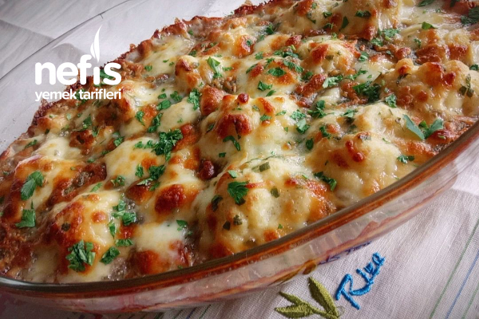

Karnabahar Graten Tarifi
Karnabahar Graten Tarifi
Karnabahar Graten Tarifi İçin Malzemeler
Haşlamak için;
- 1 orta boy karnabahar
- 1 çay kaşığı tuz
- Su
Sosu İçin;
- su bardağı süt
- 1 su bardağı yoğurt
- Yarım su bardağı sıvı yağ
- 2 adet yumurta
- 1 paket kabartma tozu
- 1 çay kaşığı tuz
- 1 çay kaşığı karabiber
- 1 çay kaşığı kimyon
- 1 tutam maydanoz
- Yarım su bardağı un
Üzeri İçin;
- 1 su bardağı rendelenmiş kaşar peyniri
TARİFİN YAPILIŞI
- Karnabaharı küçük parçalara koparıp yıkayalım.
- Uygun bir tencereye alarak tuzlu suda hafif diri kalacak şekilde haşlayalım.
- Onlar haşlanırken sosunu hazırlayalım.
- Maydanozu ince doğrayalım, sos malzemelerini bir kapta karıştıralım.
- Haşlanan karnabahar parçalarını süzüp sosun içine atalım.
- Daha sonra karnabaharlarımızı yağlanmış borcama sıkı bir şekilde dizelim.
- Kalan sosu üzerine dökelim ve önceden ısıttığımız 190 derece fırında 30 dakika üzeri kızarana kadar pişirelim.
- Üzeri kızarınca fırından çıkartıp rendelediğimiz kaşar peynirini serpip tekrar fırına verelim.
- Kaşar peyniri hafif kızarınca, yaklaşık 10 dakika sonra fırından alalım.
- 10-15 dakika dinlendirdikten sonra servis edebiliriz.